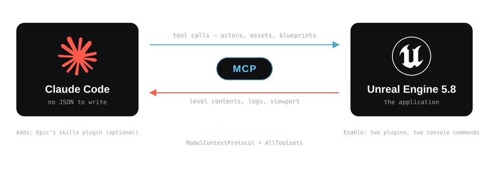

Connect Unreal Engine 5.8 to Claude
Unreal 5.8 ships its own MCP server — two plugins, two console commands, no JSON to write. Plus Epic's companion skills plugin for Claude Code, and the one setting that stops the server exposing any tools at all.

Unreal 5.8 is the only application in these guides where the MCP server ships with the software. There is nothing to download for the server itself — two plugins and two console commands and it is running.
Epic also publish a companion Claude Code plugin that carries engine knowledge and a session hook. The two are separate things and it is worth being clear which is which:
| What it is | |
|---|---|
| The MCP server | Built into the engine. Plugins ModelContextProtocol and AllToolsets. This is what gives Claude tools. |
unreal-engine-skills-for-claude-code | An Epic-maintained Claude Code plugin containing a skill and a session hook. It depends on the engine's server; it is not the server. |
Sources: Epic's unreal-engine-skills-for-claude-code-plugin README (MIT, EpicGames org). Epic's engine documentation pages did not render when we checked them, so everything below comes from that README — verify against Epic's own docs for your engine build.
Step 1 — enable the plugins
In the editor, Edit → Plugins, and enable both:
ModelContextProtocolAllToolsets
Both. Epic's README is explicit about why: AllToolsets provides the tools; the server exposes none without it. Enable only the first and you get a server that connects cleanly and can do nothing — which looks like a broken install and is not.
Whether a restart is required is not stated in the README. Restart anyway.
Step 2 — start the server
In the editor console:
ModelContextProtocol.StartServerIt binds to localhost:8000 with the URL path /mcp.
To use a different port, pass it as an argument:
ModelContextProtocol.StartServer 9000To have it start on its own, the README points at a bAutoStartServer setting under [/Script/ModelContextProtocolEngine.ModelContextProtocolSettings].
Step 3 — generate the client config
ModelContextProtocol.GenerateClientConfig ClaudeCodeEpic's README notes that the plugin does not ship a static .mcp.json — this command generates the config from the server's current port and URL. Re-run it after changing either.
The README does not name the file it writes or where it writes it. In practice look for a .mcp.json in your project folder.
Step 4 — the Claude Code skills plugin (optional but recommended)
/plugin marketplace add anthropics/claude-plugins-official
/plugin install unreal-engine-skills-for-claude-code@claude-plugins-officialFor a team, add it to .claude/settings.json under enabledPlugins:
"unreal-engine-skills-for-claude-code@claude-plugins-official": trueWindows note: the plugin's session hook needs Git for Windows (Git Bash) or WSL. Native PowerShell has no bash, so the hook will not run — though the MCP tools still work fine without it.
Checking it worked
/plugin— the Installed tab should show the plugin enabled./mcp— look forunreal-mcp(orunreal-mcp-proxy).- Then actually exercise it:
> List all actors in the current level
Epic's own warning is worth repeating: a connected proxy does not prove that Unreal is reachable. The optional proxy caches the native tool catalogue as a fallback, and cached tools do not prove that live calls can succeed. The only real test is a call that touches the level.
The editor must be running, with the server started, for any tool to execute. The proxy can hold the client connection open while the editor is stopped, but nothing runs.
A contradiction in Epic's own README
The README says tools are "auto-discovered by Claude Code via MCP. No manual configuration needed" — and separately tells you to run GenerateClientConfig. Both statements are in the same document and it does not reconcile them.
Practically: run GenerateClientConfig. If discovery turns out to have happened anyway, you have lost nothing.
Security
Epic's README has a security section, and it is more candid than most:
- The server binds to
localhost:8000with origin validation. Origin validation blocks browser tabs. It does not stop any process running as the same user on the same machine from connecting. - No authentication mechanism is described.
- Do not run it on shared or untrusted machines, and do not expose the port beyond loopback.
ProgrammaticToolset.execute_tool_scriptruns arbitrary Python inside the editor.- Epic advise against
--dangerously-skip-permissionswith this plugin loaded, and recommend saving and committing before long MCP sessions.
That last pair is the operative advice. Commit first. An agent with arbitrary Python in your editor and no permission prompts is a bad combination on a project you care about.
Where this fits for architectural work
Unreal is the end of the pipeline, not the start, and that shapes what this is useful for.
Good: interrogating a level — what actors exist, where, with what properties. Batch operations across many actors. Setting up sequences, lighting and cameras. The repetitive scene-assembly work that follows an import.
Not good: fixing an import that arrived wrong. If geometry is jittering, materials are missing or nothing has a usable identifier, the problem came from the authoring model and it has to be fixed there. No amount of editor-side scripting makes a model twin-ready if it arrived without stable identity or at the wrong origin.
That is a specific enough problem that we wrote a skill for it — Revit → Unreal Handover checks placement, identity, polygon budget and materials before anyone exports, which is the only point where any of it is cheap to fix.